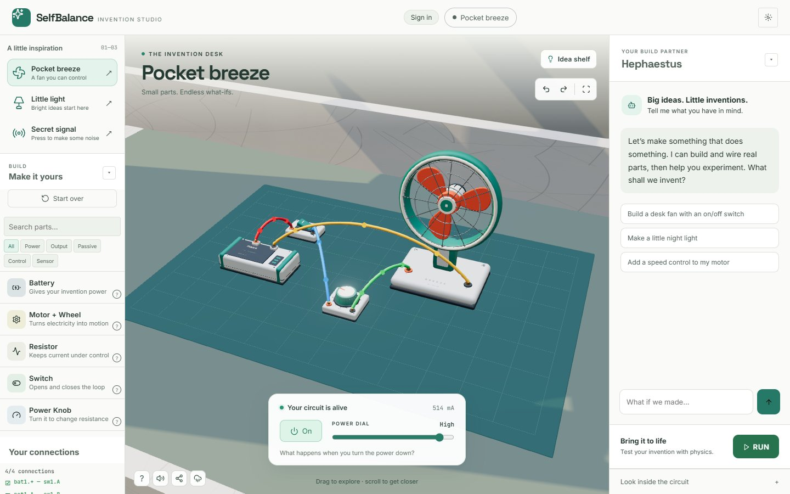

A real DC-circuit solver
The solver follows your bench connections, lights LEDs, and flags shorts or over-current as you wire.
An AI invention studio for ages 10–14
Place batteries, motors, lights, and controls on a 3D bench. Wire the pins and watch a real DC-circuit solver respond as your invention takes shape. Turn the power dial, flip a switch, or press RUN to test your motor in physics. Keep changing the same creation.

What's inside
Every part has pins, controls, and circuit behavior. Experiment safely, see what changes, and keep refining your invention.
The solver follows your bench connections, lights LEDs, and flags shorts or over-current as you wire.
A detailed desk fan, battery, motor, lights, and tactile controls. Pick from 17 parts and arrange them into something of your own.
Describe an idea in plain language. Hephaestus can place, wire, name, move, and toggle parts, then explain the build.
Press RUN to test the motor your circuit powers, then return to the same creation and keep experimenting.
Drag parts, connect pins, turn controls, and use touch-friendly mobile controls on a smaller screen.
Try Pocket breeze, Little light, or Secret signal, then change the parts and connections to make the idea your own.
How it works
Choose a starter or drag parts from the tray onto the 3D bench. They fall, collide, and settle as you arrange them.
Connect pin to pin and let the solver show what is happening. Or ask Hephaestus to place and wire the parts.
Test the motor your circuit powers, return to your bench, and change a control to see the difference.
Ready when you are
Open the studio, choose a starter, and make the idea your own.
Open the studio